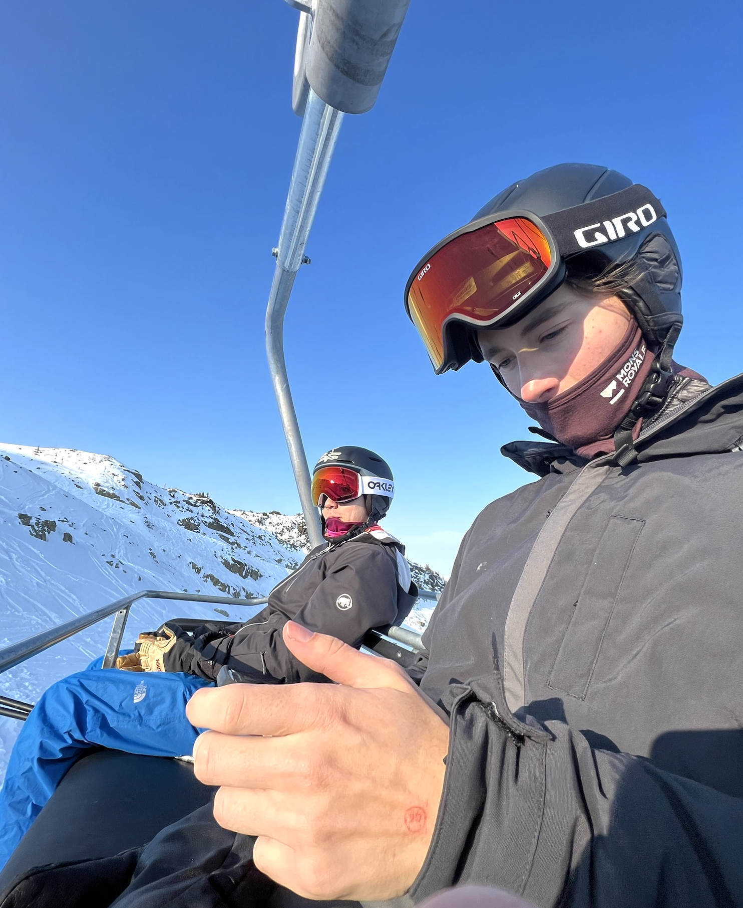
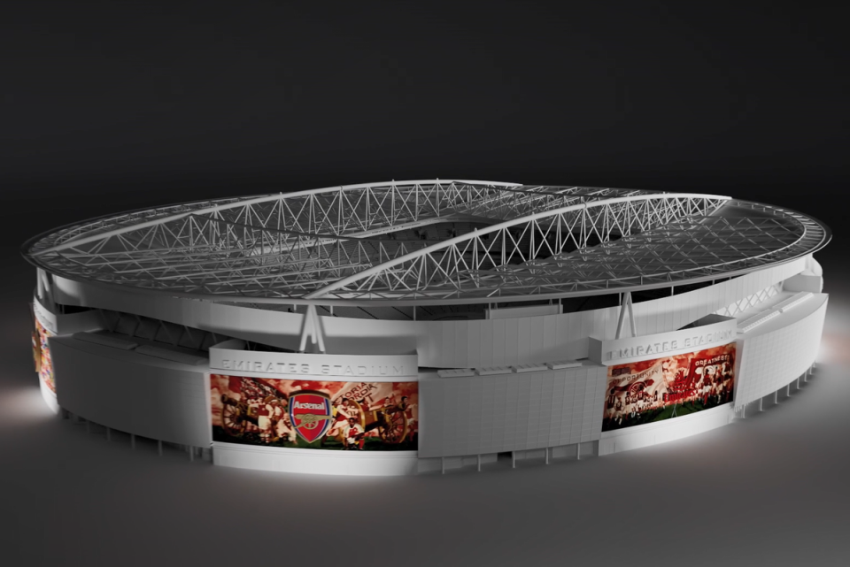
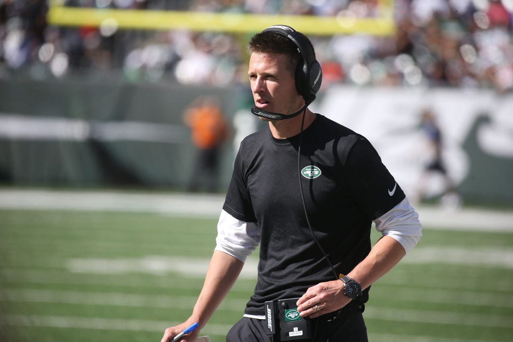
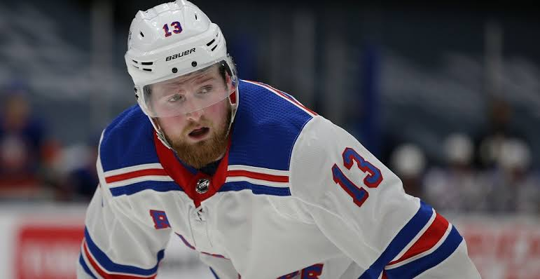

James Justicz
LinkedIn
GitHub

Arsenal Unveil New Emirates Stadium Art

Jets Part Ways With Offensive Coordinator Mike LaFleur, per Reports - Nick Selbe

Alexis Lafreniere gets Rangers opportunity with Chris Kreider out - Mollie Walker